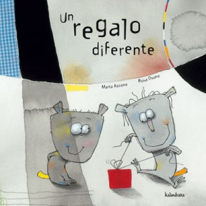

|  |
LEGUA EDITORIAL
“HILOS DE COLORES es un libro sobre la pérdida de la memoria y la importancia de los sentimientos, sobre el cariño y la generosidad.
Está hecho con el corazón y con el ánimo de colaborar a que seamos más sensibles y empáticos, no solo con la enfermedad o la vejez, sino con todo lo que afecta a cualquier ser humano.
Habla de ese entramado de recuerdos, experiencias y emociones que vamos tejiendo como si fueran hilos desde pequeños y que forman nuestro tejido personal.” |
|